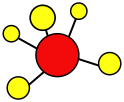
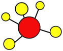

There's More
But you'll have to ask me if you want to learn what else I can do.
Please feel free to email me at:
Data Visualization
I like doing a little bit of everything.
But the career path I chose is data visualization.
And the skill I want to develop is interactive data visualization. Particularly using tools like...

Click on the image to interactiely explore the TIMSS 2015 Math Results.
Geospatial Analysis
Another growing interest of mine are maps. Maps are one of the oldest tools for data sharing and visualization. Very few tools can provide the amount of information found on maps as concisely as a map.
While R provides a lot of great tools for analyzing geospatial data, one of my favorite tools is...
Open Street maps is an open source project where people around the world contribute knowledge about their surroundings. The OSMData package is a way for useRs to access this information.
Click on the gif to learn how to use open source tools to explore geospatial data.
Graph/Network Analysis
Graphs and complex systems are relatively new passions for me. I've been learning as much as I can with my freetime.
My journey into complex systems has exposed me to the following graph technologies...
 

Neo4j is a very popular label-property graph database. Gremlin is the querying language associated with the TinkerPop graph framework. And igraph is one of the main packages for graph analysis in R.
Click on the image to watch my useR! 2018 talk on graph analysis using igraph.
Data Engineering
Almost everything I do requires data mining and data manipulation of some kind.
My tool of choice for these tasks is...
While the R statistical language is powerful enough on its own, what makes it a powerful tool is the community around it. Wonderful people have created amazing tools and tutorials that make all aspects of the data mining, cleaning, and exploration process as painless as possible.
Click the image to learn how I used R to explore the 2011 Trends in International Math and Science Study.
Hello, my name is...
Benjamin Ortiz Ulloa
and I'm a [insert buzzword title]. But labels aren't the best way to describe what I can do. So I'll just tell you...
Scroll Down
⤵